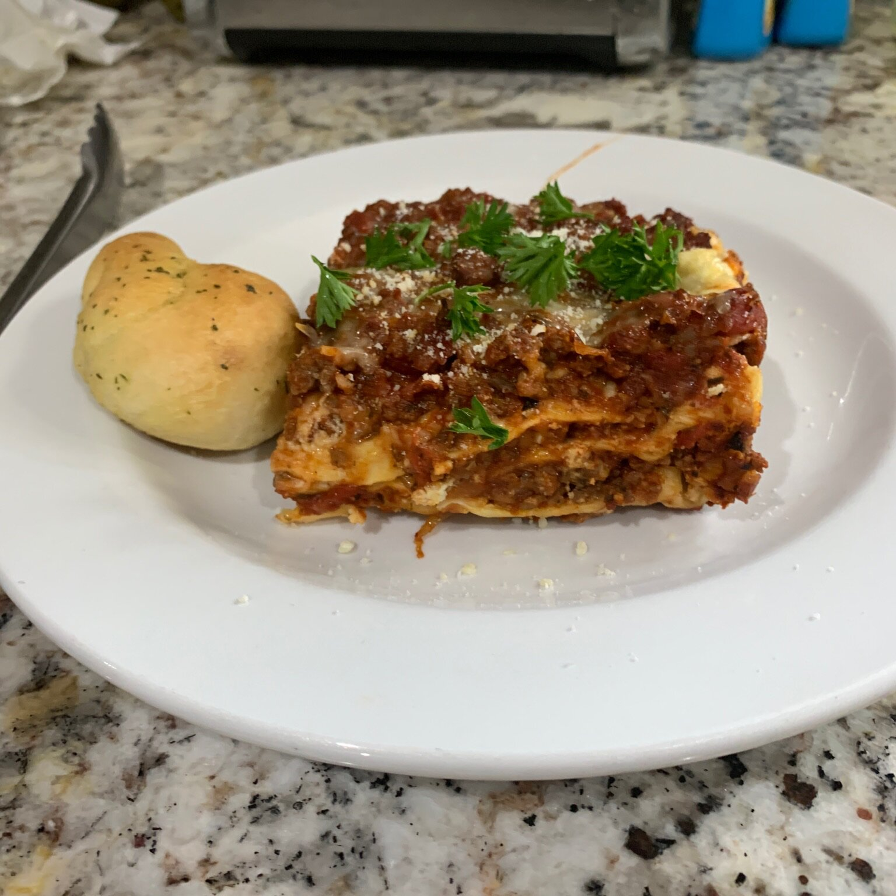

How to make a homemade Lasagna

How to make a delicious homemade Lasagna?
Description
This is a Lasagna recipe taken from Allrecipes to be used as a sample in the Odin Project
Recipes
- 1 pounds sweet Italian sausage.
- 3/4 pounds of lean ground beef.
- 1/2 cup of minced onion.
- 2 cloves of garlic, crushed.
- 1(28 ounce)can of crushed tomatoes.
- 2(6ounce)cans of tomato paste.
- 1/2 cup of water.
- 2 tablespoons white sugar.
- 1 ½ teaspoons dried basil leaves.
- ½ teaspoon fennel seeds.
- 1 teaspoon Italian seasoning.
- 1 ½ teaspoons salt, divided, or to taste.
- ¼ teaspoon ground black pepper.
- 4 tablespoons chopped fresh parsley.
- 12 lasagna noodles.
- 16 ounces ricotta cheese.
- 1 egg.
- ¾ pound mozzarella cheese, sliced.
- ¾ cup grated Parmesan cheese.
Directions
- Step 1
In a Dutch oven, cook sausage, ground beef, onion, and garlic over medium heat until well browned. Stir in crushed tomatoes, tomato paste, tomato sauce, and water. Season with sugar, basil, fennel seeds, Italian seasoning, 1 teaspoon salt, pepper, and 2 tablespoons parsley. Simmer, covered, for about 1 1/2 hours, stirring occasionally.
- Step 2
Bring a large pot of lightly salted water to a boil. Cook lasagna noodles in boiling water for 8 to 10 minutes. Drain noodles, and rinse with cold water. In a mixing bowl, combine ricotta cheese with egg, remaining parsley, and 1/2 teaspoon salt.
- Step 3
Preheat oven to 375 degrees F (190 degrees C).
- Step 4
To assemble, spread 1 1/2 cups of meat sauce in the bottom of a 9x13-inch baking dish. Arrange 6 noodles lengthwise over meat sauce. Spread with one half of the ricotta cheese mixture. Top with a third of mozzarella cheese slices. Spoon 1 1/2 cups meat sauce over mozzarella, and sprinkle with 1/4 cup Parmesan cheese. Repeat layers, and top with remaining mozzarella and Parmesan cheese. Cover with foil: to prevent sticking, either spray foil with cooking spray, or make sure the foil does not touch the cheese.
- Step 5
Bake in preheated oven for 25 minutes. Remove foil, and bake an additional 25 minutes. Cool for 15 minutes before serving.
Back to Recipes.